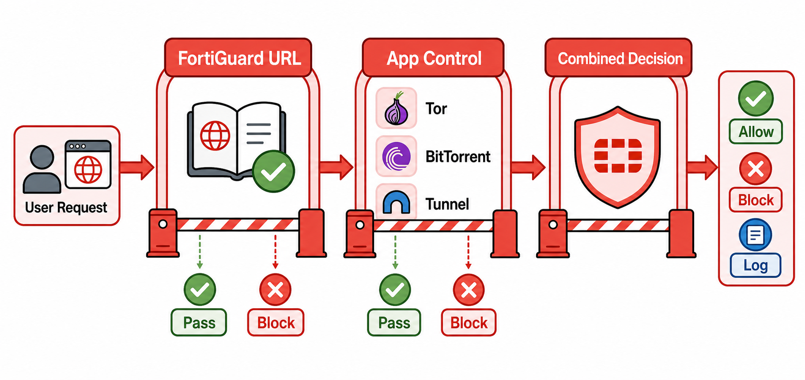

Overview
Web filtering and application control are two distinct but complementary security profiles in FortiGate, and understanding where each operates — and where each fails — is essential for designing an effective content security posture. Web filtering primarily operates on URLs and domain names: it queries the FortiGuard URL database, assigns a category to each requested URL, and applies a permit, block, or monitor action based on policy. The FortiGuard database contains hundreds of millions of categorized URLs across 90+ categories, updated continuously by Fortinet's threat research teams.
Web filtering can run in two inspection modes. In proxy mode, FortiGate acts as an explicit or transparent proxy, fully buffering HTTP and HTTPS requests before applying inspection — this gives the most complete visibility and enables features like safe search enforcement. In flow mode, FortiGate inspects the traffic stream without buffering, offering better performance at the cost of some inspection depth. Application control operates differently: instead of examining URLs, it uses deep packet inspection to identify applications by their traffic signatures — the specific byte patterns, protocol behaviors, and connection characteristics that uniquely identify applications like Skype, BitTorrent, or Psiphon, regardless of what port or protocol they attempt to use.
The interaction between the two profiles matters operationally. A web filter might allow a request to a cloud hosting domain (reputation clean, category: technology) while application control identifies the application as a circumvention tool and blocks it. When both profiles are applied to the same policy, FortiGate evaluates both — the most restrictive action wins. Combined with SSL deep inspection, which provides the cleartext payload necessary for both profiles to operate on encrypted traffic, the three together form a comprehensive content and application control stack. Without SSL inspection, both web filtering and application control are limited to what is visible in the outer TLS metadata.

Target Questions
These are the questions your Socratic session will explore. Read them before you start — they tell you what understanding to look for while reviewing the study guide.
- 1What is a FortiGuard web filter category and how does FortiGate categorize a URL?
- 2What is the difference between web filtering in flow mode vs proxy mode?
- 3How does application control identify applications — what is the difference between signature-based and behavior-based identification?
- 4What is "safe search" enforcement and how does FortiGate implement it for major search engines?
- 5What is a web filter override and how does it work — who can trigger it?
- 6What is the difference between blocking at the URL level vs DNS level in FortiGate web filtering?
- 7What happens if a URL is in an "allow" category but an application control signature matches a blocked application?